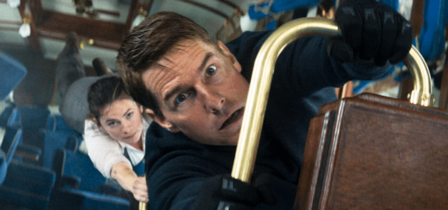

Mission: Impossible – The Final Reckoning, prévu pour le 21 mai 2025 en France, s'annonce comme le film le plus long de la saga. Avec une durée estimée à 2 heures et 51 minutes, il surpasserait ainsi Mission: Impossible – Dead Reckoning (2h43) et Mission: Impossible – Fallout (2h28) .
Une conclusion épique
Ce huitième volet, réalisé par Christopher McQuarrie, poursuit directement les événements de Dead Reckoning, où l'agent Ethan Hunt (Tom Cruise) se retrouve confronté à l'IA malveillante "L'Entité". L'intrigue le mène à la recherche d'un sous-marin russe, le Sevastopol, abritant le code source de l'IA, dans le but de l'anéantir :contentReference[oaicite:0]{index=0}.
Un budget record
Avec un budget estimé à 400 millions de dollars, ce film devient l'un des plus coûteux de l'histoire du cinéma. Cette somme colossale soulève des questions sur sa rentabilité, d'autant plus que le précédent opus n'a pas atteint les attentes au box-office :contentReference[oaicite:1]{index=1}.
Un casting étoilé
Outre Tom Cruise, le film réunit des acteurs tels que Ving Rhames, Simon Pegg, Hayley Atwell, Vanessa Kirby et Esai Morales. De nouveaux visages, dont Lucy Tulugarjuk, Katy O'Brian et Hannah Waddingham, rejoignent également la distribution :contentReference[oaicite:2]{index=2}.
Une sortie très attendue
La sortie de The Final Reckoning est prévue pour le 21 mai 2025 en France. Paramount envisage également une présentation lors du Festival de Cannes, qui se déroulera du 13 au 24 mai 2025, bien que rien ne soit confirmé à ce jour :contentReference[oaicite:3]{index=3}.
➡️ À lire aussi : Hunger Games 6 : Sunrise on the Reaping - Préquel sur Haymitch Abernathy